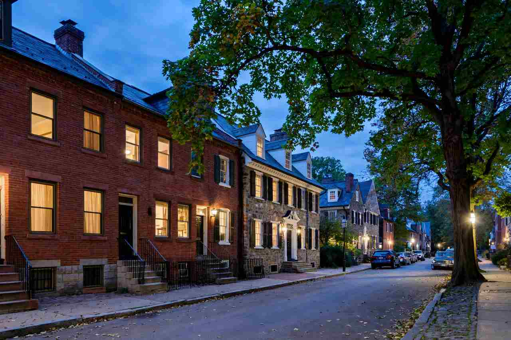

Rodent Control · Railroad, PA
Licensed Rodent Control in Railroad, PA
Rats in the attic or mice in the kitchen in Railroad? Murvo provides same-day rodent control with local crews who inspect first, remove the animals already inside, and seal the entry points they used. Every job is quoted flat-rate in writing before work begins and backed by a written guarantee, covering homes and businesses across York County. Local crews cover 1 ZIP codes in the Railroad area, from Shrewsbury to the far side of York County.
24/7Availability
1ZIP codes covered
Same-dayResponse
Licensed · Upfront options · Written guarantees · Fully insured
Railroad at a glance
Local Rodent Control for Railroad, PA.
York County
Countysouthern Pennsylvania
RegionYork · 14 mi
Nearest metro36 miles south of Harrisburg
From Harrisburg1
ZIP codes covered Service by service in Railroad
Rodent Control Services Available in Railroad
The full range of residential and commercial rodent services in Railroad and York County - built around the species and housing here, from emergency removal and same-day control to exclusion, proofing, trapping, cleanup, and damage repair. Every service below is quoted flat-rate in writing and backed by our workmanship guarantee.
- 01Rodent Control↗
- 02Rodent Inspection↗
- 03Rodent Removal↗
- 04Rodent Exclusion↗
- 05Rodent Proofing↗
- 06Rat Control↗
- 07Mice Control↗
- 08Mouse Removal↗
- 09Rat Removal↗
- 10Rodent Trapping↗
- 11Rodent Baiting↗
- 12Rodenticide Application↗
- 13Attic Rodent Removal↗
- 14Crawl Space Rodent Removal↗
- 15Wall Rodent Removal↗
- 16Kitchen Rodent Control↗
- 17Garage Rodent Control↗
- 18Commercial Rodent Control↗
- 19Residential Rodent Control↗
- 20Emergency Rodent Removal↗
- 21Same-Day Rodent Control↗
- 22Rodent Damage Repair↗
- 23Rodent Waste Cleanup↗
- 24Rodent Disinfection↗
- 25Rodent Odor Removal↗
- 26Dead Rodent Removal↗
- 27Rodent Dropping Cleanup↗
- 28Rodent Exclusion for Roofs↗
- 29Rodent Exclusion for Vents↗
- 30Rodent Exclusion for Chimneys↗
Rodent Control in Railroad
Rodent Control in Railroad
In Railroad, pre-war rowhomes, brownstones, triple-deckers, and older single-family homes give rodents warmth, shelter, and easy routes through basement foundations, sewer and pipe chases, shared party walls, and alley-facing garage and door seals, especially once nights turn cold across York County. Our licensed, insured technicians identify the species, map active runways, and build a control plan around your home rather than a generic spray. Every visit is documented with photos, trap records, and clear next steps for your household.
Homeowners in Railroad call Murvo for rodent control because the problem here is specific: Norway rat (Rattus norvegicus) pressure around pre-war rowhomes, brownstones, triple-deckers, and older single-family homes, tight access at basement foundations, sewer and pipe chases, shared party walls, and alley-facing garage and door seals, and activity that follows the local season. Our York County crews diagnose the real source before recommending work, explain the options in plain language, and quote one flat rate in writing. Across Railroad - including Shrewsbury, New Freedom - every visit is backed by licensed, insured technicians and our written workmanship guarantee. In Railroad, rodent control calls most often involve pre-war rowhomes, brownstones, triple-deckers, and older single-family homes, where basement foundations, sewer and pipe chases, shared party walls, and alley-facing garage and door seals decide whether the fix holds.
Our process follows five stages: Inspect, Remove, Exclude, Clean, and Monitor. Active animals are cleared with targeted trapping matched to the species, then openings around pipes, vents, and rooflines are sealed with copper mesh, hardware cloth, and metal flashing. Contaminated areas are cleaned safely, and monitoring visits confirm activity has stopped before we sign the job off. A technician first checks the attic, crawl space, garage, and kitchen, recording droppings, nests, gnaw marks, and entry gaps with photos. You approve every stage in advance, in writing.
After you book, we confirm a time window and your background-checked technician arrives in a marked vehicle with identification. You receive a flat-rate written quote before any work starts. Once approved, trapping and sealing begin, and follow-up visits are scheduled before we leave, with the guarantee in writing. They walk the property with you, inspect inside and out, and explain what they find with photos. No work begins without your approval.
Need help quickly in Railroad? Call any time — the emergency line is staffed 24/7, and same-day rodent control appointments are available in most areas. We inspect first, explain the plan in plain language, and put the flat rate in writing before work starts. Murvo's Railroad crews explain the finding either way, and the flat-rate quote leaves the decision with you.
Murvo does not quote rodent control sight unseen, because species, activity, and sealing needs change the work involved. After inspection you get one flat-rate written quote, and that is the figure you pay. As national context only, Angi's 2026 figures put rat and mouse removal and control at an average of $396, with a typical range of $189 to $655 — a benchmark, not a Murvo price.
Rodent Inspection in Railroad
Rodent Inspection in Railroad
A proper rodent inspection in Railroad answers three questions: which species is active, where is it nesting, and how is it getting inside? Our licensed, insured technicians document runways, droppings, and damage with photos and plain-language notes, then separate urgent fixes from preventive ones. There is no pressure to proceed, and every recommendation is priced in writing first.
Homeowners in Railroad call Murvo for rodent inspection because the problem here is specific: Norway rat (Rattus norvegicus) pressure around pre-war rowhomes, brownstones, triple-deckers, and older single-family homes, tight access at basement foundations, sewer and pipe chases, shared party walls, and alley-facing garage and door seals, and activity that follows the local season. Our York County crews diagnose the real source before recommending work, explain the options in plain language, and quote one flat rate in writing. Across Railroad - including Shrewsbury, New Freedom - every visit is backed by licensed, insured technicians and our written workmanship guarantee. Homes near Shrewsbury tend to show activity first in Railroad, which is why inspections start with basement foundations, sewer and pipe chases, shared party walls, and alley-facing garage and door seals.
Think of the inspection as three passes. Each pass is photographed, and nothing is recommended without evidence from one of those passes to support it. The exterior pass checks siding, vents, pipe entries, and roof junctions for gaps and rub marks. The interior pass covers attic insulation, crawl-space corners, and kitchen voids for droppings, nests, and gnawing. The review pass brings it together: species, likely numbers, contamination, and the order in which fixes should happen. The report separates what rodents are doing now from what the structure merely allows them to do later.
Booking a rodent inspection in Railroad takes one call, and same-day appointments are often available. Findings are explained with photos before you receive a flat-rate written quote for any recommended work. Nothing proceeds without your approval, and urgent items are clearly flagged. Your technician arrives on time, walks the property with you, and inspects the attic, crawl space, and exterior in one visit. You keep the full written report either way.
You do not have to wait days for answers in Railroad. Same-day rodent inspection appointments are available in most areas, urgent calls are taken 24/7, and most home inspections take under an hour. You finish the visit with photos, written findings, and flat-rate pricing for anything we recommend. That is also why Murvo pairs removal with exclusion in Railroad - treating the animal without closing basement foundations, sewer and pipe chases, shared party walls, and alley-facing garage and door seals rarely lasts.
Nationally, a professional rodent inspection typically runs $100 to $200 according to Angi's 2026 data, and it is often credited toward the job if you proceed. Murvo confirms your exact rodent inspection price before the visit and quotes any follow-up work as a flat rate in writing after inspection, so the figure you approve is the figure you pay, with no hourly billing.
Rodent Removal in Railroad
Rodent Removal in Railroad
Most Railroad removal calls start after a homeowner has already tried a store-bought trap and caught nothing. The difference is placement and persistence. Murvo locates nests first, sets traps on confirmed routes for Norway rat (Rattus norvegicus) and House mouse (Mus musculus), returns until catches end, and quotes the whole program as one flat-rate written quote.
In Railroad, rodent removal is not a generic spray-and-go service. Rodents exploit basement foundations, sewer and pipe chases, shared party walls, and alley-facing garage and door seals in pre-war rowhomes, brownstones, triple-deckers, and older single-family homes, and a fix that ignores those routes does not last. Murvo's Railroad team inspects first, shows you the evidence - droppings, gnaw marks, entry gaps - and then lays out the work with a flat-rate written quote. We serve all of York County from Railroad, including Shrewsbury, New Freedom, and every job is covered by our written workmanship guarantee. Homes near Shrewsbury tend to show activity first in Railroad, which is why inspections start with basement foundations, sewer and pipe chases, shared party walls, and alley-facing garage and door seals.
Why trap first instead of reaching for poison? Because trapped animals can be counted, removed, and disposed of hygienically, while poisoned animals can die where nobody can reach them. Technicians therefore match traps to species and setting, work attics, voids, and kitchens in sequence, and retrieve any carcass promptly. Contaminated nesting material is bagged carefully, affected surfaces are disinfected before any cleaning, and dry sweeping of droppings is never used, since that spreads contamination into the air. The sequence ends with monitoring, because removal without a confirming check is a claim rather than a result.
Call, describe the signs, and we will set a visit window, often for the same day. With approval, traps go in immediately. Return visits are already booked, so clearing, resetting, and progress updates happen without you chasing anyone for news. The first appointment confirms species and numbers, explains the trapping sequence, and produces your written quote. Photographs and catch records are shared as the program runs, giving you visible proof of progress rather than a verbal summary at the end.
When rodents are active indoors in Railroad, waiting rarely helps. Rodent removal can usually start the same day you call, our line answers 24/7 for a rodent loose in a living area, and the first visit sets traps straight away. Scheduled returns then clear and reset them until monitoring shows the home is clear. In York County, most cases involve the Norway rat (Rattus norvegicus) and the House mouse (Mus musculus), so the inspection focuses on their routes first.
How many animals are active, which species they are, and how much sealing follows removal all shape the price, so we assess first and then quote one flat rate in writing. Angi's 2026 national context — an average of $396 and a typical $189 to $655 range for rat and mouse removal — is provided for comparison only; your written quote is the exact Murvo figure.
Rodent Exclusion in Railroad
Rodent Exclusion in Railroad
Trapping alone only buys time if rodents can walk straight back in. Rodent exclusion in Railroad is the permanent fix: a full entry-point survey, then sealing with materials rodents cannot gnaw through. Murvo clears active animals first so none are sealed inside, gives one flat-rate written quote before work starts, and guarantees the workmanship on every seal installed.
Homeowners in Railroad call Murvo for rodent exclusion because the problem here is specific: Norway rat (Rattus norvegicus) pressure around pre-war rowhomes, brownstones, triple-deckers, and older single-family homes, tight access at basement foundations, sewer and pipe chases, shared party walls, and alley-facing garage and door seals, and activity that follows the local season. Our York County crews diagnose the real source before recommending work, explain the options in plain language, and quote one flat rate in writing. Across Railroad - including Shrewsbury, New Freedom - every visit is backed by licensed, insured technicians and our written workmanship guarantee. Coverage for rodent exclusion spans 1 ZIP codes in York County, including 17355.
The sequence matters as much as the materials. Photographs record every finished seal with its location, building a reference you keep. Because a properly sealed home needs far less ongoing treatment, exclusion also lowers long-term reliance on bait. A later monitoring check tests the work honestly, revisiting each sealed point for fresh rub marks, droppings, or gnawing. Active openings are closed first, inactive weaknesses next, and purely cosmetic gaps last, so protection arrives where pressure is highest. The final monitoring visit therefore matters as much as the sealing day itself, and its findings are shared.
Before sealing day, confirm pets are secured and access to the roofline and foundation is clear. The crew then works through the agreed list, checks that no animals remain inside, and fits each seal cleanly. Afterwards you receive the photographs, the guarantee, and a date for the follow-up check that confirms everything is holding as intended. If monitoring ever finds fresh activity at a sealed point, that written inventory tells us exactly what to inspect first.
The first step is a survey, and in Railroad we can often schedule that survey the same day you call about rodent exclusion. Sealing follows once active animals are cleared — nothing is ever sealed inside — and most homes are fully sealed within days, with entry points near wiring or food areas handled first. If you are seeing signs now, an inspection this week is the fastest way to know which situation you are in.
After the survey of your Railroad home, every opening that needs sealing is listed and priced as one flat-rate written quote, so you pay only for the work your property needs. For national context, Angi's 2026 data puts basic exclusion at $200 to $600 depending on access and the number of openings; that benchmark is not a Murvo price.
Rodent Proofing in Railroad
Rodent Proofing in Railroad
In pre-war rowhomes, brownstones, triple-deckers, and older single-family homes, prevention is a checklist hiding in plain sight: light under doors, unscreened vents, branches touching the roof, and clutter against walls near basement foundations, sewer and pipe chases, shared party walls, and alley-facing garage and door seals. Murvo works through that checklist across York County properties, separating simple homeowner fixes from specialist sealing, so money goes only where professional materials genuinely help.
In Railroad, rodent proofing is not a generic spray-and-go service. Rodents exploit basement foundations, sewer and pipe chases, shared party walls, and alley-facing garage and door seals in pre-war rowhomes, brownstones, triple-deckers, and older single-family homes, and a fix that ignores those routes does not last. Murvo's Railroad team inspects first, shows you the evidence - droppings, gnaw marks, entry gaps - and then lays out the work with a flat-rate written quote. We serve all of York County from Railroad, including Shrewsbury, New Freedom, and every job is covered by our written workmanship guarantee. In Railroad, rodent proofing calls most often involve pre-war rowhomes, brownstones, triple-deckers, and older single-family homes, where basement foundations, sewer and pipe chases, shared party walls, and alley-facing garage and door seals decide whether the fix holds.
Proofing starts with a whole-property assessment inside and out, from overhanging branches and cluttered garages to unsealed vents and gaps under doors. The plan typically combines structural sealing of utility entries and foundation cracks with mesh screening on vents, chimneys, and rooflines, plus door sweeps where light shows underneath. We also address attractants: securing pet food and bird seed storage, trimming vegetation away from walls, and clearing harborage. Every item is prioritized so essential work happens first. Photos show each weakness we find.
Book a rodent proofing survey in Railroad and we will arrange a visit time that suits your household, often the same day. You receive a flat-rate written quote separating essential from optional work. Approved sealing is completed cleanly, then a seasonal re-check is scheduled. Your technician walks the property with you, photographs weak points, and explains the plan in plain language. The finished work is fully guaranteed in writing by Murvo.
Rodent proofing is preventive, so there is rarely a rush, but surveys in Railroad can often be arranged the same day you call, and always within a few days. Most proofing work is completed in a single visit once you approve the plan, and booking before colder weather gives your home protection ahead of the seasonal rush indoors. Murvo's Railroad crews explain the finding either way, and the flat-rate quote leaves the decision with you.
We survey your Railroad property first, separate the quick wins you can handle yourself from the specialist sealing, and quote the professional work as one flat rate in writing so spending can be staged. Angi's 2026 national context puts exclusion, the core of proofing, at $200 to $600 for basic work — a benchmark only, not a Murvo price.
Rat Control in Railroad
Rat Control in Railroad
Rat problems escalate quietly across York County: gnawed wiring, contaminated insulation, and droppings spreading through storage areas before anyone sees an animal. Murvo answers with same-day appointments where available and a 24/7 line for urgent cases. Every visit is documented, trapped rats are removed hygienically, and the program finishes with exclusion so the next group cannot simply move in.
In Railroad, rat control is not a generic spray-and-go service. Rodents exploit basement foundations, sewer and pipe chases, shared party walls, and alley-facing garage and door seals in pre-war rowhomes, brownstones, triple-deckers, and older single-family homes, and a fix that ignores those routes does not last. Murvo's Railroad team inspects first, shows you the evidence - droppings, gnaw marks, entry gaps - and then lays out the work with a flat-rate written quote. We serve all of York County from Railroad, including Shrewsbury, New Freedom, and every job is covered by our written workmanship guarantee. Seasonal timing matters for rat control in Railroad: rodents surge in Railroad from October through March.
Control starts with species and route identification, because roof rats and Norway rats behave and enter very differently. Trapped rats are removed hygienically, and each visit is documented with locations and counts. We then pair the program with roofline and entry-point exclusion, plus attic removal and cleanup where nests are found overhead. Technicians pre-bait unset traps along proven runways so wary rats feed confidently, then set them and return to check, clear, and adjust placements until activity stops. Progress is visible at every visit.
Between visits, keep pet food secured and avoid moving any traps, even slightly, since position matters. Your background-checked technician returns on schedule, removes trapped rats promptly, adjusts placements, and reports counts plainly. The program closes only when monitoring confirms activity has ended and exclusion is finished, with your guarantee confirmed in writing at sign-off. Keep gates and access points available on scheduled days where possible, since uninterrupted checks keep the program on its planned timetable.
Rats do not wait, and neither do we: rat control in Railroad can usually start with a same-day inspection, and urgent calls are answered 24/7. Pre-baiting begins on the first visit once you approve the written quote, traps are set as soon as rats are feeding confidently, and scheduled checks keep the program moving until activity stops. The written quote for your Railroad property will spell out exactly which of these applies before any work starts.
Rat work varies with species, colony size, and how many entry points need sealing, so Murvo inspects first and quotes one flat rate in writing. For national context only, Angi's 2026 data averages rat control and removal at $396, typically $189 to $655. That benchmark is not a Murvo price; the written quote for your Railroad home is the exact figure you pay.
Mice Control in Railroad
Mice Control in Railroad
Mice slip into pre-war rowhomes, brownstones, triple-deckers, and older single-family homes in Railroad through basement foundations, sewer and pipe chases, shared party walls, and alley-facing garage and door seals and settle near warmth and food: behind appliances, inside attic voids, and along pipe runs. Because they investigate new objects quickly, clustered traps work fast when placed correctly. Our licensed, insured technicians also advise on food storage and scent-trail cleaning, then confirm with follow-up visits that activity has genuinely stopped.
In Railroad, mice control is not a generic spray-and-go service. Rodents exploit basement foundations, sewer and pipe chases, shared party walls, and alley-facing garage and door seals in pre-war rowhomes, brownstones, triple-deckers, and older single-family homes, and a fix that ignores those routes does not last. Murvo's Railroad team inspects first, shows you the evidence - droppings, gnaw marks, entry gaps - and then lays out the work with a flat-rate written quote. We serve all of York County from Railroad, including Shrewsbury, New Freedom, and every job is covered by our written workmanship guarantee. The Railroad crews who handle mice control also handle the follow-through - proofing, cleanup, and monitoring - so one visit can close the whole problem.
Mice travel short, familiar routes, hugging walls and rarely crossing open floors. Control exploits that habit: traps are clustered along baseboards, behind appliances, and inside attic voids where droppings concentrate, rather than scattered hopefully around rooms. Technicians clear and reset on schedule, tracking numbers visit by visit until they reach zero. Sealing then closes pencil-width gaps behind baseboards, around radiator pipes, and at service entries, while scent-marked surfaces are cleaned so new mice find no welcoming trail. That is why placements stay fixed between checks unless evidence, rather than impatience, gives a reason to move them.
Book mice control in Railroad with one call, and same-day visits are available in many areas. Trap checks are scheduled before we leave, and a follow-up visit confirms activity has stopped before the job is signed off. Your technician surveys the kitchen, attic, and voids, explains where mice are traveling, and gives you a flat-rate written quote before setting a single trap. Everything is explained in plain language for your household.
Mice programs move quickly in Railroad: a mice control survey can often be arranged the same day you call, and traps are set on that first visit once you approve the quote. Because mice investigate new objects fast, catches usually begin quickly, and scheduled check visits follow until a final confirmation shows activity has fully stopped. In York County, most cases involve the Norway rat (Rattus norvegicus) and the House mouse (Mus musculus), so the inspection focuses on their routes first.
Mouse work is priced by the number of rooms affected and the amount of sealing involved, so Murvo surveys first and quotes one flat rate in writing. For national context only, Angi's 2026 data averages rat and mouse control and removal at $396, typically $189 to $655. That is not a Murvo price; your written quote is exact.
Mouse Removal in Railroad
Mouse Removal in Railroad
You found droppings in a cabinet or heard scratching in the attic of your Railroad home, and you want the mice out, not managed indefinitely. Murvo's mouse removal locates nests and feeding areas room by room, runs a multi-trap program until catches reach zero, and seals access points behind it. One flat-rate written quote is agreed before work begins.
Homeowners in Railroad call Murvo for mouse removal because the problem here is specific: Norway rat (Rattus norvegicus) pressure around pre-war rowhomes, brownstones, triple-deckers, and older single-family homes, tight access at basement foundations, sewer and pipe chases, shared party walls, and alley-facing garage and door seals, and activity that follows the local season. Our York County crews diagnose the real source before recommending work, explain the options in plain language, and quote one flat rate in writing. Across Railroad - including Shrewsbury, New Freedom - every visit is backed by licensed, insured technicians and our written workmanship guarantee. In Railroad, mouse removal calls most often involve pre-war rowhomes, brownstones, triple-deckers, and older single-family homes, where basement foundations, sewer and pipe chases, shared party walls, and alley-facing garage and door seals decide whether the fix holds.
We start with a nest and feeding-area survey, checking attics, cabinets, under-floor voids, and behind kitchen units. All removed animals and contaminated material are bagged and taken away. Dead mice in inaccessible voids are located and dealt with before odor becomes a problem, and access points are then sealed as part of full exclusion. Technicians set multiple traps at proven activity points, return to clear and reset them, and track catch numbers until they fall to zero. Photos record progress at every visit.
Booking takes one call. At sign-off we review catch records together, confirm sealing is complete, and leave you with guarantee paperwork and prevention advice. We agree a time window, and your background-checked technician arrives ready to survey attics, cabinets, and voids in one visit. Work begins only after you approve the written quote, and trap checks are booked ahead so nothing drifts. Rooms are confirmed fully safe to use again.
In Railroad, mouse removal can often begin the same day you call, especially where mice are active in kitchens or living areas. The first visit surveys nesting sites and sets traps immediately after you approve the quote; because mice investigate traps quickly, catches usually start fast, and return visits continue until numbers reach zero. Around Railroad, pre-war rowhomes, brownstones, triple-deckers, and older single-family homes give rodents the most cover, which is why entry points get checked before traps are set.
Mouse removal cost reflects the number of rooms involved and how much sealing is needed, which is why Murvo surveys first and quotes a flat rate in writing. For national context only, Angi's 2026 data averages rat and mouse removal at $396, typically $189 to $655. That benchmark is not a Murvo price; your written quote covers your exact program.
Rat Removal in Railroad
Rat Removal in Railroad
Most Railroad rat removals fail elsewhere for one reason: the colony was larger than the first visit assumed. Murvo assesses species and scale before trapping, pre-baits on confirmed runways, and returns until monitoring proves the colony gone. A flat-rate written quote is agreed before any trap is set.
When you need rat removal in Railroad, the job starts with what is actually happening in your part of York County. Murvo crews work Railroad every week, so they know how Norway rat (Rattus norvegicus) and House mouse (Mus musculus) behave around pre-war rowhomes, brownstones, triple-deckers, and older single-family homes here - and where they get in: basement foundations, sewer and pipe chases, shared party walls, and alley-facing garage and door seals. We arrive equipped for the full job, confirm the flat rate in writing before work begins, and cover the whole Railroad area, including Shrewsbury, New Freedom. No call-center runaround and no open-ended hourly billing - just a local crew, a clear plan, and a written quote you approve first. Homes near Shrewsbury tend to show activity first in Railroad, which is why inspections start with basement foundations, sewer and pipe chases, shared party walls, and alley-facing garage and door seals.
Removal begins by establishing species and the scale of the problem, because a single transient rat and an attic colony need very different programs. Attic colonies may need dedicated attic work, while a carcass in a void calls for retrieval and odor treatment. Sealing follows once the property is clear. Technicians pre-bait unset traps on confirmed runways so cautious rats feed without fear, then set them, returning frequently to remove animals hygienically and adjust placements as activity shifts. Nothing is rushed at this stage.
Book and we will agree a visit time, with same-day appointments for active infestations where available. Repeat visits are scheduled in advance, progress is reported after each one, and sealing follows once catches stop and monitoring stays clear. Your technician assesses the colony, explains each stage, and confirms the written quote before pre-baiting begins. Every visit is documented with counts and locations, so the final clearance rests on a complete record rather than a single quiet check.
In Railroad, rat removal can usually start the same day you call, with 24/7 answering for rats active in living areas. Pre-baiting begins on the first visit after you approve the written quote, and traps are set once rats feed confidently, typically within days. Repeat visits then run frequently until monitoring confirms the colony is gone. Around Railroad, pre-war rowhomes, brownstones, triple-deckers, and older single-family homes give rodents the most cover, which is why entry points get checked before traps are set.
Rat removal pricing depends on colony size, access, and the sealing needed afterwards, so Murvo assesses your property first and quotes a flat rate in writing. For national context only, Angi's 2026 data averages rat removal at $396, typically $189 to $655. That is a benchmark, not a Murvo price, and your written quote covers the full program described.
Rodent Trapping in Railroad
Rodent Trapping in Railroad
Most Railroad trapping programs succeed or fail on placement, not equipment. Murvo maps runways from droppings and rub marks first, then positions traps perpendicular to walls and along beams and pipes where rodents genuinely travel. You approve one flat-rate written quote covering the program and its check visits.
When you need rodent trapping in Railroad, the job starts with what is actually happening in your part of York County. Murvo crews work Railroad every week, so they know how Norway rat (Rattus norvegicus) and House mouse (Mus musculus) behave around pre-war rowhomes, brownstones, triple-deckers, and older single-family homes here - and where they get in: basement foundations, sewer and pipe chases, shared party walls, and alley-facing garage and door seals. We arrive equipped for the full job, confirm the flat rate in writing before work begins, and cover the whole Railroad area, including Shrewsbury, New Freedom. No call-center runaround and no open-ended hourly billing - just a local crew, a clear plan, and a written quote you approve first. Coverage for rodent trapping spans 1 ZIP codes in York County, including 17355.
Trap selection covers snap traps for quick, humane dispatch, multi-catch devices for busy mouse routes, and live-capture options where you prefer release away from the home. As catches fall, we recommend exclusion sealing, plus droppings cleanup for affected areas, moving the program from active trapping to monitoring and final sign-off. Baits and lures are matched to species and location, and all devices are positioned with pet and child safety in mind and explained to your household. Every device location is mapped for you.
Between checks, leave devices untouched and note any new noises or droppings by room; that information sharpens the next visit. The program ends with a clear monitoring result, a written summary of what was caught where, and sealing advice. Your background-checked technician adjusts placements as the pattern changes and removes catches promptly and hygienically. The summary also notes which routes stayed busiest, information that makes any later exclusion work faster and more precisely targeted.
In Railroad, rodent trapping can usually start the same day you call, with traps placed or pre-baiting begun on the first visit after you approve the quote. Mice often investigate within the first night; wary rats need a few days of pre-baiting before traps are set. Scheduled check visits then keep catches moving until numbers reach zero. Around Railroad, pre-war rowhomes, brownstones, triple-deckers, and older single-family homes give rodents the most cover, which is why entry points get checked before traps are set.
Rather than charging by the trap or by the visit, Murvo inspects first and quotes rodent trapping as one flat rate in writing for the complete program, including its check visits. Price depends on species, activity level, and how many checks are needed, and there is no hourly billing at any stage, so there are no per-visit surprises.
Rodent Baiting in Railroad
Rodent Baiting in Railroad
In pre-war rowhomes, brownstones, triple-deckers, and older single-family homes, bait has a narrow, specific job: reducing outdoor pressure while sealing removes the indoor route through basement foundations, sewer and pipe chases, shared party walls, and alley-facing garage and door seals. Our technicians in York County place secured stations along runways away from play areas, label and photograph each one, and check consumption on schedule until activity ends and stations come out.
Homeowners in Railroad call Murvo for rodent baiting because the problem here is specific: Norway rat (Rattus norvegicus) pressure around pre-war rowhomes, brownstones, triple-deckers, and older single-family homes, tight access at basement foundations, sewer and pipe chases, shared party walls, and alley-facing garage and door seals, and activity that follows the local season. Our York County crews diagnose the real source before recommending work, explain the options in plain language, and quote one flat rate in writing. Across Railroad - including Shrewsbury, New Freedom - every visit is backed by licensed, insured technicians and our written workmanship guarantee. In Railroad, rodent baiting calls most often involve pre-war rowhomes, brownstones, triple-deckers, and older single-family homes, where basement foundations, sewer and pipe chases, shared party walls, and alley-facing garage and door seals decide whether the fix holds.
Baiting follows Inspect, Remove, Exclude, Clean, and Monitor, and it never stands alone. We return on schedule to check consumption, record amounts, and adjust positions, and stations are removed when activity ends rather than left indefinitely. After a full inspection maps activity, background-checked technicians choose station locations along runways, fence lines, and entry points, away from pet play areas and food storage. Every station is tamper-resistant, locked, labeled, and anchored, with placement photographed for your records. Loose bait is never used anywhere.
Booking rodent baiting in Railroad starts with an inspection, not a station. Approved stations are installed locked and labeled the same visit, with locations photographed for you. Monitoring visits are scheduled before we leave, and stations come out once activity is confirmed clear. Your technician maps activity, reviews pet, child, and wildlife concerns with you, and confirms a flat-rate written quote before anything is placed. Your written guarantee covers the full program.
In Railroad, rodent baiting starts with an inspection visit we can often arrange the same day you call. Stations are only placed after activity is mapped and you approve the written quote and each location, so setup is deliberate rather than rushed. Monitoring visits then run on a fixed schedule until consumption stops and activity is confirmed clear. In York County, most cases involve the Norway rat (Rattus norvegicus) and the House mouse (Mus musculus), so the inspection focuses on their routes first.
How many locked stations your property needs and how long monitoring runs determine the cost, so Murvo inspects and maps activity first, then quotes one flat rate in writing covering placement and scheduled checks. There are no per-visit surprises, and because the approach is exclusion-first, the aim is to reduce and eventually remove stations rather than maintain them forever.
Rodenticide Application in Railroad
Rodenticide Application in Railroad
Our approach in Railroad is exclusion-first: seal entry points, trap active animals, and shrink the need for chemical control quickly. Where rodenticide application is genuinely justified for Norway rat (Rattus norvegicus) or House mouse (Mus musculus), a licensed technician maps, labels, and anchors every station, records amounts at each visit, and retrieves dead rodents promptly where accessible to reduce odor and secondary risks.
Homeowners in Railroad call Murvo for rodenticide application because the problem here is specific: Norway rat (Rattus norvegicus) pressure around pre-war rowhomes, brownstones, triple-deckers, and older single-family homes, tight access at basement foundations, sewer and pipe chases, shared party walls, and alley-facing garage and door seals, and activity that follows the local season. Our York County crews diagnose the real source before recommending work, explain the options in plain language, and quote one flat rate in writing. Across Railroad - including Shrewsbury, New Freedom - every visit is backed by licensed, insured technicians and our written workmanship guarantee. Homes near Shrewsbury tend to show activity first in Railroad, which is why inspections start with basement foundations, sewer and pipe chases, shared party walls, and alley-facing garage and door seals.
Application begins with a thorough inspection to confirm species and activity levels and to decide whether rodenticide is needed at all; often, professional trapping plus controlled outdoor baiting is enough, and if trapping alone can solve your problem safely, that is the route we recommend first. When treatment is justified, we follow Inspect, Remove, Exclude, Clean, and Monitor: stations are mapped, labeled, anchored, and checked on schedule, with amounts recorded at every visit. Products stay inside locked stations at all times.
Before the visit, tell us about children, pets, livestock, and wildlife using the property; that information shapes product and placement decisions. On the day, your background-checked technician installs any approved stations locked and labeled, records the details, and explains what to watch for. Scheduled checks follow until activity ends and stations are removed. Label information, amounts, and visit dates stay in your records throughout, so the treatment history is complete and available whenever needed.
No responsible rodenticide application starts without an inspection, and in Railroad that inspection can often be scheduled the same day you call. If treatment is justified and you approve the written quote, locked stations are installed on that visit. Monitoring then runs on schedule, and treatment stops as soon as the data shows activity has ended. A Railroad inspection confirms it on site - dropping size, gnaw marks, and entry points tell the story quickly.
Station numbers, the product permitted under Pennsylvania rules, and the length of monitoring all shape the price. Murvo inspects first, explains whether trapping or exclusion could avoid chemical control entirely, and then quotes one flat rate in writing before work begins. That quote covers scheduled monitoring visits, so there are no per-visit surprises later.
Attic Rodent Removal in Railroad
Attic Rodent Removal in Railroad
Attics offer rodents warmth, quiet nesting material, and insulation to contaminate, and in pre-war rowhomes, brownstones, triple-deckers, and older single-family homes across Railroad they are reached through basement foundations, sewer and pipe chases, shared party walls, and alley-facing garage and door seals long before anyone notices. Our technicians photograph what they find inside, check for young, nests, and secondary entry points in adjoining crawl spaces, and clear the space before arranging cleanup and disinfection where contamination is present.
In Railroad, attic rodent removal is not a generic spray-and-go service. Rodents exploit basement foundations, sewer and pipe chases, shared party walls, and alley-facing garage and door seals in pre-war rowhomes, brownstones, triple-deckers, and older single-family homes, and a fix that ignores those routes does not last. Murvo's Railroad team inspects first, shows you the evidence - droppings, gnaw marks, entry gaps - and then lays out the work with a flat-rate written quote. We serve all of York County from Railroad, including Shrewsbury, New Freedom, and every job is covered by our written workmanship guarantee. In Railroad, attic rodent removal calls most often involve pre-war rowhomes, brownstones, triple-deckers, and older single-family homes, where basement foundations, sewer and pipe chases, shared party walls, and alley-facing garage and door seals decide whether the fix holds.
Cleanup overhead demands care. Droppings and nesting material are never dry-swept, because that can spread contamination into the air; surfaces are disinfected first, then waste is removed hygienically by technicians in protective equipment. Contaminated insulation is assessed honestly, with repair referrals where replacement is warranted. Poison is avoided in attics deliberately, since animals dying in inaccessible corners create odor and retrieval problems. Adjoining crawl spaces are checked before the job is signed off as complete. The result is a documented attic: cleared, sealed, cleaned where needed, and verified quiet before closure.
Book attic rodent removal in Railroad and we will arrange an attic visit, same-day where chewed wiring or heavy activity makes it urgent. Trapping checks follow on schedule, sealing and cleanup complete the job, and monitoring confirms the attic stays clear under guarantee. Your technician inspects the attic and roofline, shows you photographs of the evidence, and confirms a flat-rate written quote before removal begins. You approve every stage before it happens.
In Railroad, attic rodent removal visits are often available the same day, and we prioritize attics where chewed wiring creates a fire risk. Trapping starts on the first visit after you approve the written quote, checks run on schedule, and most attics are cleared and sealed within days, with monitoring left briefly to confirm nothing remains inside. The written quote for your Railroad property will spell out exactly which of these applies before any work starts.
Attic costs depend on how many animals are active, how much sealing the roofline needs, and whether contaminated insulation requires cleanup, so Murvo inspects first and quotes one flat rate in writing. That quote covers the removal program described, with cleanup options priced separately in writing before you decide, so there are no surprises once work is underway.
Crawl Space Rodent Removal in Railroad
Crawl Space Rodent Removal in Railroad
Why avoid poison beneath a home? Pets can access crawl spaces, and carcasses hidden under a house are difficult to retrieve. Murvo favors trapping and physical exclusion instead, delivered by licensed, insured technicians who photograph every sealed opening, refit access panels securely, and confirm results with monitoring under a written guarantee.
In Railroad, crawl space rodent removal is not a generic spray-and-go service. Rodents exploit basement foundations, sewer and pipe chases, shared party walls, and alley-facing garage and door seals in pre-war rowhomes, brownstones, triple-deckers, and older single-family homes, and a fix that ignores those routes does not last. Murvo's Railroad team inspects first, shows you the evidence - droppings, gnaw marks, entry gaps - and then lays out the work with a flat-rate written quote. We serve all of York County from Railroad, including Shrewsbury, New Freedom, and every job is covered by our written workmanship guarantee. In Railroad, crawl space rodent removal calls most often involve pre-war rowhomes, brownstones, triple-deckers, and older single-family homes, where basement foundations, sewer and pipe chases, shared party walls, and alley-facing garage and door seals decide whether the fix holds.
Cleanup below a home follows CDC guidance: droppings and nesting debris are never dry-swept, because disturbing them can spread contamination; surfaces are disinfected first, then waste is bagged and removed by technicians in protective equipment. Photographs of finished sealing are supplied with your guarantee paperwork, and access panels are refitted securely after every visit. We also trace connections upward through wall voids, since treating the crawl space alone misses rodents traveling to the attic. Moisture problems found are reported with practical recommendations.
Schedule an under-home inspection, usually within days and sooner when odors reach living areas. Your technician photographs conditions below, explains findings in plain language, and confirms the written quote before any trapping. Clearance, vent screening, and cleanup then follow in sequence, with monitoring left in place until the space below is confirmed quiet. Photographs from below the home accompany the final paperwork, which is especially useful because few homeowners ever see that space themselves.
For crawl space rodent removal in Railroad, inspections are usually arranged within a few days — and sooner when odors are drifting into living areas or activity sounds heavy. Trapping begins on the first visit after you approve the written quote, clearance and sealing follow in sequence, and monitoring stays in place until the space below is confirmed quiet. The written quote for your Railroad property will spell out exactly which of these applies before any work starts.
Access, the number of vents and gaps to seal, and whether waste cleanup is required all shape crawl-space pricing, so Murvo inspects first and quotes one flat rate in writing. Cleanup options are priced in writing before you decide whether to include them, and there are no surprise charges for extra vents within the agreed scope.
Wall Rodent Removal in Railroad
Wall Rodent Removal in Railroad
Wall voids are hidden highways through pre-war rowhomes, brownstones, triple-deckers, and older single-family homes in Railroad: mice travel them between kitchens and attics, and rats use them to reach food unseen via basement foundations, sewer and pipe chases, shared party walls, and alley-facing garage and door seals. Our technicians carry inspection cameras for accessible voids, helping locate nests without opening large sections of drywall. If an animal has already died in the wall, retrieval and sanitation are handled too.
When you need wall rodent removal in Railroad, the job starts with what is actually happening in your part of York County. Murvo crews work Railroad every week, so they know how Norway rat (Rattus norvegicus) and House mouse (Mus musculus) behave around pre-war rowhomes, brownstones, triple-deckers, and older single-family homes here - and where they get in: basement foundations, sewer and pipe chases, shared party walls, and alley-facing garage and door seals. We arrive equipped for the full job, confirm the flat rate in writing before work begins, and cover the whole Railroad area, including Shrewsbury, New Freedom. No call-center runaround and no open-ended hourly billing - just a local crew, a clear plan, and a written quote you approve first. Homes near Shrewsbury tend to show activity first in Railroad, which is why inspections start with basement foundations, sewer and pipe chases, shared party walls, and alley-facing garage and door seals.
Once the void is clear, we apply proofing to wall entry routes, sealing baseboard and pipe gaps linked to kitchen activity so the route cannot reopen. If a rodent has died in the wall, retrieval is followed by sanitation: contaminated material is never dry-swept, surfaces are disinfected first following CDC guidance, and odor treatment is applied so other rodents are not attracted back. Monitoring at key access points then confirms the void stays quiet. Connected voids are checked before we finish.
After booking, tell us when the noises happen; timing helps pinpoint the active void before we arrive. Sign-off happens only when monitoring confirms silence. On the day, your background-checked technician listens, traces, and inspects with cameras where possible, then sets traps at access points once you approve the quote. Follow-up visits clear traps and run quiet-wall checks at different times of day. Any access cut is agreed and made good neatly.
In Railroad, wall rodent removal locating visits are often available the same day you call, especially for persistent scratching keeping you awake. Trapping is set at access points on that first visit once you approve the written quote, and because rodents travel the void nightly, results usually follow within days, confirmed by quiet-wall checks before we sign off. In York County, activity follows the local season, so timing the work matters as much as the method.
How precisely the activity can be located, and whether a minimal access cut turns out to be needed, decide the price of wall work. Murvo therefore locates the activity first and quotes a flat rate in writing, covering the trapping, sealing, and monitoring in your plan, so wall access never becomes an open-ended bill.
Kitchen Rodent Control in Railroad
Kitchen Rodent Control in Railroad
You wipe the counters, yet droppings keep appearing by morning. That pattern points to rodents moving through wall voids and cabinet voids while the house sleeps. Our kitchen rodent control in Railroad tracks those routes, removes the animals away from food surfaces, and seals the openings so the cycle finally stops for good.
In Railroad, kitchen rodent control is not a generic spray-and-go service. Rodents exploit basement foundations, sewer and pipe chases, shared party walls, and alley-facing garage and door seals in pre-war rowhomes, brownstones, triple-deckers, and older single-family homes, and a fix that ignores those routes does not last. Murvo's Railroad team inspects first, shows you the evidence - droppings, gnaw marks, entry gaps - and then lays out the work with a flat-rate written quote. We serve all of York County from Railroad, including Shrewsbury, New Freedom, and every job is covered by our written workmanship guarantee. Seasonal timing matters for kitchen rodent control in Railroad: rodents surge in Railroad from October through March.
Rather than starting with traps, we start with questions: where did you see signs, and when? Answers guide a close look under sinks, behind appliances and inside lower cabinets. Once species and routes are confirmed, traps go where rodents actually travel, kept clear of counters and stored food. Gaps around plumbing get sealed, contaminated spots get cleaned, and return checks confirm whether movement has ended. If activity shifts, placement changes with it, because a fixed plan rarely fits a moving problem inside a busy working kitchen.
Tell us what you noticed, and we will schedule a visit that fits around meals and family routines. The technician inspects first, explains the findings in plain terms, and puts the price in writing. With your approval, trapping and sealing begin, followed by cleaning of affected areas. Later checks review traps and monitors, and we do not close the visit series until the kitchen shows no fresh signs of rodent activity at all.
Our phone lines are open 24/7, and kitchen cases involving droppings near food preparation areas are treated as a priority. In many Railroad cases we can arrange a same-day visit, subject to technician availability. Call, describe what you have found, and we will offer the earliest appointment we can. If you are seeing signs now, an inspection this week is the fastest way to know which situation you are in.
Cost depends on how many rodents are active, where they are entering, and how much sealing and cleanup the kitchen needs. Murvo inspects first, then gives one flat-rate written quote covering trapping, sealing and follow-up monitoring, with no hourly billing or add-on surprises. You approve the full price before any work begins, and the quote is backed by our written workmanship guarantee.
Garage Rodent Control in Railroad
Garage Rodent Control in Railroad
In York County garages often connect straight into kitchens, utility rooms and wall voids. Our garage rodent control tackles the garage as the front door it really is: thorough inspection, humane removal where possible, durable sealing, and practical storage advice that keeps rodents from settling in again. Help is available around the clock, every day.
When you need garage rodent control in Railroad, the job starts with what is actually happening in your part of York County. Murvo crews work Railroad every week, so they know how Norway rat (Rattus norvegicus) and House mouse (Mus musculus) behave around pre-war rowhomes, brownstones, triple-deckers, and older single-family homes here - and where they get in: basement foundations, sewer and pipe chases, shared party walls, and alley-facing garage and door seals. We arrive equipped for the full job, confirm the flat rate in writing before work begins, and cover the whole Railroad area, including Shrewsbury, New Freedom. No call-center runaround and no open-ended hourly billing - just a local crew, a clear plan, and a written quote you approve first. Seasonal timing matters for garage rodent control in Railroad: rodents surge in Railroad from October through March.
Door corners get checked before anything else, because daylight showing at the base often marks the main entrance. Nesting comes out safely, entry points get sealed with sturdy materials, and the door sweep is addressed where it has failed. From there we follow droppings and rub marks along walls, behind storage and toward utility lines entering the house. Traps sit on those travel lines, not scattered at random. Final monitoring tells us whether the garage is truly quiet or whether activity is still passing through.
Once booked, your Murvo technician arrives at the agreed time, walks the garage with you and inspects doors, walls and storage. Approved work covers trapping, nest removal and sealing, carried out by a licensed, insured technician. We return for monitoring checks, confirm the garage is clear, and leave storage advice behind. All work is covered by our written workmanship guarantee. You receive a flat-rate written quote before work starts. We leave the area tidy when the work finishes.
We answer calls 24/7 and treat garages with active nesting, chewed wiring or rodents moving into the house as urgent. Same-day appointments in Railroad are often available, depending on technician schedules. Call with a description of the signs you have seen and we will offer you the earliest visit we can. The written quote for your Railroad property will spell out exactly which of these applies before any work starts.
Pricing depends on garage size, how established the infestation is, and how much proofing the doors and walls need. Murvo inspects first and quotes one flat rate in writing, covering trapping, nest removal, sealing and monitoring, with no hourly charges. Nothing starts until you approve that price, and the completed work is backed by our written workmanship guarantee.
Commercial Rodent Control in Railroad
Commercial Rodent Control in Railroad
One rodent sighting can close a restaurant, fail a food-safety audit or destroy stock in a warehouse. Our commercial rodent control in Railroad protects restaurants, warehouses and commercial sites with discreet service, monitored trapping, durable exclusion and audit-ready documentation that keeps inspectors and auditors satisfied. Licensed and insured, Murvo backs every job with a written workmanship guarantee.
In Railroad, commercial rodent control is not a generic spray-and-go service. Rodents exploit basement foundations, sewer and pipe chases, shared party walls, and alley-facing garage and door seals in pre-war rowhomes, brownstones, triple-deckers, and older single-family homes, and a fix that ignores those routes does not last. Murvo's Railroad team inspects first, shows you the evidence - droppings, gnaw marks, entry gaps - and then lays out the work with a flat-rate written quote. We serve all of York County from Railroad, including Shrewsbury, New Freedom, and every job is covered by our written workmanship guarantee. Seasonal timing matters for commercial rodent control in Railroad: rodents surge in Railroad from October through March.
What inspectors want is a system, and that is how we work. Visits run outside peak trading where possible, and any live sighting during service gets handled quietly. Risks get ranked by area, from food storage to waste handling, so urgent gaps close first. Staff learn which early signs to report and whom to call. Over time, trend notes show whether pressure is falling, holding or shifting to a new area, letting you adjust deliveries, storage or building repairs before a minor issue becomes a failed audit.
Once you approve the proposal, we agree visit times, access arrangements and any site safety rules. Initial work tackles active rodents and the worst entry points first, followed by scheduled monitoring and proofing. You receive consistent reports suitable for food-safety audits after every visit. If a live sighting happens during trading, call us any time, day or night. The program is reviewed regularly so it keeps protecting the site. Your technician explains each visit before leaving the property.
Commercial calls are taken 24/7, and a live sighting during trading is handled as an emergency with discretion to protect customers and reputation. The visit we can offer in Railroad depends on technician availability, and we will always give you the earliest one possible. We can also advise on immediate steps to protect stock and your audit position while you wait. A Railroad inspection confirms it on site - dropping size, gnaw marks, and entry points tell the story quickly.
For wider context, Angi's 2026 figures put rat extermination at $189-$655, averaging $396 nationally, though commercial sites are scoped individually and those figures are not Murvo prices. Site size, sector, activity and the exclusion and monitoring required all shape the cost. Murvo surveys first, then quotes a flat rate in writing for initial work or a clear scheduled-service price for an ongoing program, with reports included for your audit file.
Residential Rodent Control in Railroad
Residential Rodent Control in Railroad
Scratching above the ceiling rarely stays an attic-only problem. Rodents move through voids, drop into kitchens and nest where the house is warmest. Murvo's residential rodent control in Railroad treats the whole property as one system, and you receive a flat-rate written quote after inspection, before removal, sealing or cleanup work begins.
When you need residential rodent control in Railroad, the job starts with what is actually happening in your part of York County. Murvo crews work Railroad every week, so they know how Norway rat (Rattus norvegicus) and House mouse (Mus musculus) behave around pre-war rowhomes, brownstones, triple-deckers, and older single-family homes here - and where they get in: basement foundations, sewer and pipe chases, shared party walls, and alley-facing garage and door seals. We arrive equipped for the full job, confirm the flat rate in writing before work begins, and cover the whole Railroad area, including Shrewsbury, New Freedom. No call-center runaround and no open-ended hourly billing - just a local crew, a clear plan, and a written quote you approve first. Coverage for residential rodent control spans 1 ZIP codes in York County, including 17355.
Every home visit follows Inspect, Remove, Exclude, Clean and Monitor. Removal uses targeted trapping placed safely away from children and pets. Exclusion seals the gaps found, cleanup disinfects contaminated areas, and monitoring visits confirm activity has ended rather than simply moved elsewhere in the house. Inspection covers attics, crawl spaces, garages, kitchens and the exterior, reading droppings, gnaw marks and rub marks to identify species and entry points such as basement foundations, sewer and pipe chases, shared party walls, and alley-facing garage and door seals. Materials are chosen for durability, not the cheapest quick fix.
After booking, a licensed, background-checked technician arrives at the agreed time and inspects the whole property. The work is backed by our written workmanship guarantee. You receive one flat-rate written quote covering the plan before work starts. Once approved, removal, sealing and cleanup go ahead in the right order. We return for monitoring visits, report what we find each time, and close the job only when activity has stopped. We leave the area tidy when the work finishes.
You can call us 24/7, and homes where rodents are in living areas, kitchens or children's bedrooms are prioritized in scheduling. A same-day visit in Railroad is often possible, subject to technician availability. Share what you have seen or heard and we will offer the earliest appointment available, plus advice for the meantime. Around Railroad, pre-war rowhomes, brownstones, triple-deckers, and older single-family homes give rodents the most cover, which is why entry points get checked before traps are set.
Cost depends on the species, how established the infestation is, and how much exclusion and cleanup your home needs. Murvo inspects first, then quotes one flat rate in writing covering removal, sealing, cleaning and monitoring, with no hourly charges or add-on surprises. You approve the price before work begins, and everything is backed by our written workmanship guarantee.
Emergency Rodent Removal in Railroad
Emergency Rodent Removal in Railroad
A rat in the kitchen, scratching inside a bedroom wall or droppings found where children play cannot wait for a routine appointment. Our emergency rodent removal in Railroad is available 24/7, with licensed technicians who remove the animals, secure entry points and make the space safe again.
Homeowners in Railroad call Murvo for emergency rodent removal because the problem here is specific: Norway rat (Rattus norvegicus) pressure around pre-war rowhomes, brownstones, triple-deckers, and older single-family homes, tight access at basement foundations, sewer and pipe chases, shared party walls, and alley-facing garage and door seals, and activity that follows the local season. Our York County crews diagnose the real source before recommending work, explain the options in plain language, and quote one flat rate in writing. Across Railroad - including Shrewsbury, New Freedom - every visit is backed by licensed, insured technicians and our written workmanship guarantee. In Railroad, emergency rodent removal calls most often involve pre-war rowhomes, brownstones, triple-deckers, and older single-family homes, where basement foundations, sewer and pipe chases, shared party walls, and alley-facing garage and door seals decide whether the fix holds.
Urgency does not skip the basics. Anything that cannot be finished safely that visit, such as larger sealing work, is explained clearly with a plan and price in writing. We still identify the species, still look for the route in, and still check whether this is one animal or part of a wider infestation. Removal comes first, followed by securing gaps, cleaning affected areas and setting monitors. You end the visit knowing what was done, what remains, and what signs should prompt another call overnight.
Call any time, day or night, and describe what is happening. We agree the earliest visit available and any steps to keep people and pets safe meanwhile. On arrival the technician inspects, quotes one flat rate in writing, and starts once you approve. Removal and securing come first, then disinfection and monitoring. Follow-up visits confirm the home is clear, under our written workmanship guarantee. You stay informed at every stage of the work.
Our lines are open 24/7, every day, and emergency calls in Railroad are triaged by risk, with live rodents in living areas, food contamination and chewed wiring prioritized. We will offer the earliest visit our technicians can reach and talk you through simple steps to keep everyone safe until we arrive. Murvo's Railroad crews explain the finding either way, and the flat-rate quote leaves the decision with you.
Emergency pricing depends on where the rodents are, how many are involved, and what securing, cleanup or follow-up the property needs. Murvo inspects on arrival and quotes one flat rate in writing before work starts, with no hourly billing, even for urgent callouts. You approve the price first, and the work is backed by our written workmanship guarantee.
Same-Day Rodent Control in Railroad
Same-Day Rodent Control in Railroad
Finding droppings this morning should not mean waiting days for help. Our same-day rodent control in Railroad aims to inspect and start treatment the day you call, subject to availability, covering removal, sealing and monitoring from licensed, insured technicians who know local rodent behavior well. That is the standard Murvo works to in Pennsylvania.
Homeowners in Railroad call Murvo for same-day rodent control because the problem here is specific: Norway rat (Rattus norvegicus) pressure around pre-war rowhomes, brownstones, triple-deckers, and older single-family homes, tight access at basement foundations, sewer and pipe chases, shared party walls, and alley-facing garage and door seals, and activity that follows the local season. Our York County crews diagnose the real source before recommending work, explain the options in plain language, and quote one flat rate in writing. Across Railroad - including Shrewsbury, New Freedom - every visit is backed by licensed, insured technicians and our written workmanship guarantee. The Railroad crews who handle same-day rodent control also handle the follow-through - proofing, cleanup, and monitoring - so one visit can close the whole problem.
Think of the first visit as both treatment and diagnosis. We check adjoining spaces, note food and shelter sources, and explain which sealing work will follow. Return visits read the traps and monitors, adjust placement if activity has shifted, and complete exclusion. While traps go down on active routes, the inspection keeps going, because the gap that let rodents in matters as much as the animals themselves. That rhythm keeps the urgency of day one without sacrificing the checks that confirm a lasting result.
Phone as early as you can and describe where signs appeared. Your technician inspects on arrival, quotes one price in writing, and starts approved work during that same visit. Traps are placed, key gaps are noted or secured, and follow-up appointments are arranged before departure. If a same-day slot is available in your area, we will book it and confirm access details, pets and parking. Monitoring then continues until repeat checks show the property is clear of activity.
Calling early in the day gives the best chance of a same-day appointment in Railroad, subject to technician availability, and our lines are open 24/7. If today is fully booked, we will offer the next available visit instead. We will also suggest simple precautions you can take in the meantime. Around Railroad, pre-war rowhomes, brownstones, triple-deckers, and older single-family homes give rodents the most cover, which is why entry points get checked before traps are set.
Speed does not change how Murvo prices work, and there is no premium surprise for a same-day start. For context, Angi's 2026 figures put rat extermination at $189-$655, averaging $396 nationally, but those are not Murvo prices. After inspection, you receive one flat-rate written quote based on species, activity and the exclusion and cleanup needed, and treatment begins only after you approve it.
Rodent Damage Repair in Railroad
Rodent Damage Repair in Railroad
Repair only makes sense once rodents are gone and excluded. In Railroad Murvo sequences removal, exclusion and repair as one plan, quoted as a flat-rate written quote before work starts, covering gnawed materials, damaged insulation and the holes rodents made getting in. Call Murvo today for straightforward help.
Homeowners in Railroad call Murvo for rodent damage repair because the problem here is specific: Norway rat (Rattus norvegicus) pressure around pre-war rowhomes, brownstones, triple-deckers, and older single-family homes, tight access at basement foundations, sewer and pipe chases, shared party walls, and alley-facing garage and door seals, and activity that follows the local season. Our York County crews diagnose the real source before recommending work, explain the options in plain language, and quote one flat rate in writing. Across Railroad - including Shrewsbury, New Freedom - every visit is backed by licensed, insured technicians and our written workmanship guarantee. Homes near Shrewsbury tend to show activity first in Railroad, which is why inspections start with basement foundations, sewer and pipe chases, shared party walls, and alley-facing garage and door seals.
Assessment starts once removal and exclusion are complete or scheduled, because repairing over an active infestation wastes money. Repairs then restore insulation, seal holes with gnaw-resistant materials, and replace damaged components, with electrical or plumbing risks flagged for licensed trades where needed. We inspect attics, walls, garages and service areas for gnawed wiring, damaged pipes, shredded or urine-soaked insulation, chewed timber and holed vents or screens. Contaminated material is removed safely, following disinfection-first practice where droppings are present. Nothing is left to guesswork at any stage.
When you book, tell us where damage is worst, such as the attic, garage or wiring. The guarantee is provided in writing. Your technician assesses, plans and quotes in writing before beginning. Repairs are sequenced with exclusion so nothing is sealed over while rodents remain active. On completion we review each repaired area with you and note any trade work, such as electrical checks, that we recommend. Your technician explains each visit before leaving the property.
Damage repair is scheduled once removal and exclusion are under way, so repairs are not undone by active rodents. We are available 24/7 by phone, and urgent safety issues in Railroad, such as chewed wiring, are prioritized for assessment. Call and describe the damage, and we will arrange the earliest suitable visit. In York County, activity follows the local season, so timing the work matters as much as the method.
For national context, Angi's 2026 figures show rat extermination ranging from $189-$655, with an average of $396; repair costs are separate and those figures are not Murvo prices. How much material is damaged, whether insulation needs replacing and how many entry points need repair and proofing all affect scope. Murvo assesses first, then quotes one flat rate in writing for the agreed work, with no hourly billing, for your approval before repairs begin.
Rodent Waste Cleanup in Railroad
Rodent Waste Cleanup in Railroad
Attic insulation soaked through with urine is not a job for a household mop. Murvo's rodent waste cleanup in Railroad handles heavy contamination safely, following CDC guidance from start to finish. You receive a flat-rate written quote after assessment, and our technicians work in full PPE while waste is removed, bagged and taken away properly.
Homeowners in Railroad call Murvo for rodent waste cleanup because the problem here is specific: Norway rat (Rattus norvegicus) pressure around pre-war rowhomes, brownstones, triple-deckers, and older single-family homes, tight access at basement foundations, sewer and pipe chases, shared party walls, and alley-facing garage and door seals, and activity that follows the local season. Our York County crews diagnose the real source before recommending work, explain the options in plain language, and quote one flat rate in writing. Across Railroad - including Shrewsbury, New Freedom - every visit is backed by licensed, insured technicians and our written workmanship guarantee. The Railroad crews who handle rodent waste cleanup also handle the follow-through - proofing, cleanup, and monitoring - so one visit can close the whole problem.
Cleanup is sequenced with removal and exclusion, because fresh waste appears until animals and entry points are dealt with. Children and pets are kept away until surfaces are clean and dry. Technicians in respirators and gloves remove contaminated insulation and nesting after thorough disinfectant soaking, following CDC safe practice at every stage. Vacuuming untreated waste is never used. Treated areas receive a final disinfection, and we advise when rooms can be reoccupied safely. Safety of occupants and pets guides every method chosen.
A short call starts things off; photographs can help us plan access and equipment. Ventilation comes first, disinfectant soaking second, careful removal third. Surfaces are disinfected once waste is out, and the area is left to dry before use. On arrival, the technician checks the extent of waste, confirms the written price, and only then opens up the work area. We close by explaining what was removed, what was treated, and which gaps still need proofing to prevent a repeat.
We answer 24/7 and prioritize heavy contamination in living areas, especially where children or pets are present. Availability in Railroad depends on technician schedules, but we will offer the earliest visit we can. Meanwhile, keep people and pets out of the area, ventilate if safe, and never dry-sweep or vacuum droppings. The written quote for your Railroad property will spell out exactly which of these applies before any work starts.
Cleanup is priced by the volume and location of contaminated material, not by a national average. That said, Angi's 2026 figures put rat extermination typically at $189-$655, averaging $396, for national context only — they are not Murvo prices. Murvo assesses first, following CDC practice on ventilation and disinfectant soaking, then quotes one flat rate in writing so you approve the full cleanup cost before work begins.
Rodent Disinfection in Railroad
Rodent Disinfection in Railroad
Rodents navigate by scent, returning along trails they marked earlier. Disinfection in Railroad therefore does two jobs at once: it reduces bacteria left in droppings and urine, and it breaks down the scent signals guiding newcomers. Our technicians ventilate first, work in protective gear, and advise clearly when each treated area can be used again.
In Railroad, rodent disinfection is not a generic spray-and-go service. Rodents exploit basement foundations, sewer and pipe chases, shared party walls, and alley-facing garage and door seals in pre-war rowhomes, brownstones, triple-deckers, and older single-family homes, and a fix that ignores those routes does not last. Murvo's Railroad team inspects first, shows you the evidence - droppings, gnaw marks, entry gaps - and then lays out the work with a flat-rate written quote. We serve all of York County from Railroad, including Shrewsbury, New Freedom, and every job is covered by our written workmanship guarantee. Seasonal timing matters for rodent disinfection in Railroad: rodents surge in Railroad from October through March.
Treatment begins where contamination concentrates, guided by the inspection map of nesting sites, dropping points and urine trails. Disinfectant is then applied across the affected surfaces and left for its full dwell time. Following CDC cleanup principles, areas are ventilated first and any remaining deposits are soaked with disinfectant rather than disturbed dry; nothing is dry-swept or vacuumed, and technicians wear gloves and respiratory protection throughout. After drying, we check the treated zones and confirm which rooms, attics or storage areas are ready for normal use again.
Book treatment once removal and cleanup are underway, and tell us which areas worry you most. Areas are ventilated, disinfected and left for the full dwell time, with PPE worn throughout. Your technician confirms the treatment zones, explains the products and safety steps, and quotes the work in writing before starting. Once surfaces are dry, we walk the treated areas with you, confirm reoccupation timing, and note anything that pairs with upcoming sealing or odor work in your plan.
Disinfection is usually scheduled straight after removal and cleanup, so contaminated areas are treated promptly. We are available 24/7 by phone, and Railroad appointments depend on technician availability. Call once rodents have been found or removed, and we will arrange the earliest suitable treatment visit and explain any precautions meanwhile. The written quote for your Railroad property will spell out exactly which of these applies before any work starts.
For national context, Angi's 2026 data puts rat extermination typically at $189-$655, averaging $396; disinfection is normally a modest part of a full remediation program, not a Murvo price list. Murvo quotes disinfection as a flat rate in writing, scaled to the number and size of areas treated, never sold as a vague add-on. You approve the price before treatment begins.
Rodent Odor Removal in Railroad
Rodent Odor Removal in Railroad
Air fresheners lose this fight every time. When rodent smell has soaked into insulation or a wall void, covering it up changes nothing underneath. Murvo's rodent odor removal in Railroad hunts down the source, removes it safely, then neutralizes what remains. A flat-rate written quote comes after the source-finding inspection, before treatment work begins.
Homeowners in Railroad call Murvo for rodent odor removal because the problem here is specific: Norway rat (Rattus norvegicus) pressure around pre-war rowhomes, brownstones, triple-deckers, and older single-family homes, tight access at basement foundations, sewer and pipe chases, shared party walls, and alley-facing garage and door seals, and activity that follows the local season. Our York County crews diagnose the real source before recommending work, explain the options in plain language, and quote one flat rate in writing. Across Railroad - including Shrewsbury, New Freedom - every visit is backed by licensed, insured technicians and our written workmanship guarantee. In Railroad, rodent odor removal calls most often involve pre-war rowhomes, brownstones, triple-deckers, and older single-family homes, where basement foundations, sewer and pipe chases, shared party walls, and alley-facing garage and door seals decide whether the fix holds.
Odor work starts with source detection, because treating air while contamination remains never lasts. Affected surfaces are then disinfected and treated with odor-neutralising products that break down residue rather than covering it with fragrance. Technicians inspect attics, wall voids, crawl spaces and subfloors, using the smell pattern and inspection evidence to locate urine-soaked insulation, nesting or a dead rodent. The source is removed safely, with disinfectant soaking and full PPE where droppings or carcasses are involved, never dry-swept. Materials are chosen for durability, not the cheapest quick fix.
When you book, tell us where and when the smell is worst, as that helps narrow the search. We review the finished area with you and record what was found. The completed work is covered by our written workmanship guarantee. Your technician inspects, quotes in writing, and starts only with your approval. Source removal, disinfection and treatment follow in sequence, carried out by licensed, insured technicians. The plan is agreed with you before any work begins.
Odor investigations are booked as inspection visits, and we will offer the earliest appointment our Railroad technicians can reach. We answer calls 24/7. Strong smells from a suspected dead rodent in a wall are prioritized where possible. Meanwhile, ventilate affected rooms and avoid disturbing droppings or nesting you may find. In York County, activity follows the local season, so timing the work matters as much as the method.
For national context, Angi's 2026 figures put rat extermination typically at $189-$655, averaging $396; odor work varies with the source and materials affected, and those figures are not Murvo prices. Murvo finds the source first, then quotes one flat rate in writing covering removal, disinfection and treatment. You approve the full price before work begins, under our written workmanship guarantee.
Dead Rodent Removal in Railroad
Dead Rodent Removal in Railroad
Guessing wrong is expensive here: a hole cut in the wrong place leaves the smell and adds a repair. Technicians in Railroad read the odor gradient, check attic and crawl space access, and use fly activity as a clue before deciding where to open. Once found, the animal is removed in protective gear and the cavity treated.
When you need dead rodent removal in Railroad, the job starts with what is actually happening in your part of York County. Murvo crews work Railroad every week, so they know how Norway rat (Rattus norvegicus) and House mouse (Mus musculus) behave around pre-war rowhomes, brownstones, triple-deckers, and older single-family homes here - and where they get in: basement foundations, sewer and pipe chases, shared party walls, and alley-facing garage and door seals. We arrive equipped for the full job, confirm the flat rate in writing before work begins, and cover the whole Railroad area, including Shrewsbury, New Freedom. No call-center runaround and no open-ended hourly billing - just a local crew, a clear plan, and a written quote you approve first. Around Shrewsbury, New Freedom, Glen Rock, the pattern is similar: House mouse (Mus musculus) finds basement foundations, sewer and pipe chases, shared party walls, and alley-facing garage and door seals first, and lasting dead rodent removal has to close those routes.
Sometimes the answer is simpler: an animal in attic insulation or under floorboards that can be reached without opening a wall at all. Removal includes contaminated material immediately around the carcass, removed after disinfectant treatment and disposed of sealed. Odor treatment follows disinfection at the exact location. We check those accessible places first. Finally, we trace the probable entry route, since an animal that died indoors entered somehow, and we record any further live activity we notice so a removal plan can follow if needed.
Call and tell us where the smell is strongest and roughly when it started; avoid heavy masking sprays, since the natural pattern guides the search. With approval, the carcass is removed in PPE, the area disinfected and treated for odor, and any small access opening is explained beforehand. Your technician inspects, pinpoints the likely location, and quotes the removal in writing before anything is opened. We finish by checking entry routes and advising how long residual smell may take to clear.
We answer 24/7 and treat dead rodent calls as urgent, because odor and fly activity worsen quickly. In Railroad we will offer the earliest visit our technicians can reach. Tell us where the smell is strongest and when it began, and avoid masking sprays meanwhile, as the odor pattern helps location. The written quote for your Railroad property will spell out exactly which of these applies before any work starts.
For national context, published guides citing Fixr put dead rodent removal typically at $150-$250 nationally, depending on access; that range is not a Murvo price. Wall voids and difficult locations cost more than open attics. Murvo locates the carcass first, then quotes one flat rate in writing covering removal and disinfection, which you approve before work begins.
Rodent Dropping Cleanup in Railroad
Rodent Dropping Cleanup in Railroad
Small dark pellets along skirting boards, in cabinets or on attic insulation confirm rodents are, or have been, living indoors. Our rodent dropping cleanup in Railroad removes droppings safely the CDC way: ventilate, soak with disinfectant, then remove, never dry-sweeping or vacuuming untreated deposits. That is the standard Murvo works to in Pennsylvania.
In Railroad, rodent dropping cleanup is not a generic spray-and-go service. Rodents exploit basement foundations, sewer and pipe chases, shared party walls, and alley-facing garage and door seals in pre-war rowhomes, brownstones, triple-deckers, and older single-family homes, and a fix that ignores those routes does not last. Murvo's Railroad team inspects first, shows you the evidence - droppings, gnaw marks, entry gaps - and then lays out the work with a flat-rate written quote. We serve all of York County from Railroad, including Shrewsbury, New Freedom, and every job is covered by our written workmanship guarantee. The Railroad crews who handle rodent dropping cleanup also handle the follow-through - proofing, cleanup, and monitoring - so one visit can close the whole problem.
The process protects the household first and the investigation second. Cleanup on its own is never the finish: we confirm removal is complete and entry points are sealed, or fresh droppings will keep appearing. Ventilation clears the air before work, disinfectant soaking makes deposits safe to handle, and PPE protects technicians throughout. Removed material is sealed and taken away, surfaces are disinfected again, and we advise on food storage and harbourage that drew rodents in. Safety of occupants and pets guides every method chosen.
Leave deposits exactly where you found them and keep the room closed off if you can. Approved work ventilates the area, soaks deposits, removes them in full PPE and disinfects surfaces afterward. When you book, tell us which rooms are affected. Your technician assesses without disturbing anything dry, explains the safe sequence, and quotes the cleanup in writing. We share what the droppings indicated about species and routes, and connect the findings to your removal and sealing plan before finishing.
Our line is answered 24/7, and we will offer the earliest Railroad appointment our technicians can reach, prioritizing droppings found in kitchens and living areas. Until we arrive, keep children and pets away from deposits and ventilate the room if you can do so safely. Do not sweep, brush or vacuum anything dry, as that can disturb contaminated particles. That is also why Murvo pairs removal with exclusion in Railroad - treating the animal without closing basement foundations, sewer and pipe chases, shared party walls, and alley-facing garage and door seals rarely lasts.
For national context, Angi's 2026 data puts rat extermination typically at $189-$655, averaging $396; dropping cleanup is normally a smaller, clearly itemised part of overall work, and those figures are not Murvo prices. Murvo assesses how many rooms are affected and how heavy deposits are, then quotes one flat rate in writing before cleanup begins.
Rodent Exclusion for Roofs in Railroad
Rodent Exclusion for Roofs in Railroad
Roof rats and squirrels travel along fences, wires and branches straight onto roofs in Railroad. Murvo inspects the whole roofline, removes rodents first, then proofs eaves, tiles, flashing and penetrations with copper mesh, hardware cloth and quality sealants. A flat-rate written quote comes before work.
Homeowners in Railroad call Murvo for rodent exclusion for roofs because the problem here is specific: Norway rat (Rattus norvegicus) pressure around pre-war rowhomes, brownstones, triple-deckers, and older single-family homes, tight access at basement foundations, sewer and pipe chases, shared party walls, and alley-facing garage and door seals, and activity that follows the local season. Our York County crews diagnose the real source before recommending work, explain the options in plain language, and quote one flat rate in writing. Across Railroad - including Shrewsbury, New Freedom - every visit is backed by licensed, insured technicians and our written workmanship guarantee. Coverage for rodent exclusion for roofs spans 1 ZIP codes in York County, including 17355.
Roof exclusion is detailed work, not a tube of filler. Where tiles or boards are damaged by gnawing or rot, repairs are included or quoted clearly. The result is a roof that keeps weather and rodents out, guaranteed in writing. Technicians work through a roofline checklist, sealing gaps at basement foundations, sewer and pipe chases, shared party walls, and alley-facing garage and door seals and every penetration found, with gnaw-resistant metals and mesh backed by sealant. Materials are fixed so wind, weather and determined rats cannot shift them. The same careful standard applies on every single visit.
Book a survey and mention where attic noises or droppings are worst. Your technician inspects inside and out, photographs each entry point, and quotes the full sealing scope in writing. Once removal is complete or confirmed, proofing proceeds point by point using copper mesh, hardware cloth and sealants matched to each gap. We review the finished points with you and record them clearly. Follow-up monitoring checks the attic stays quiet, and any concerns are discussed with you promptly and honestly.
Roof exclusion starts with a survey visit, and we will offer the earliest appointment our Railroad technicians can reach, with our lines open 24/7. Active attic infestations are prioritized where possible. Meanwhile, note where noises occur, and do not block roof gaps yourself, as rodents could be trapped inside. Murvo's Railroad crews explain the finding either way, and the flat-rate quote leaves the decision with you.
Roofline work varies with access, roof size and any damage found, so it is surveyed before it is priced. For national context, published guides put basic exclusion typically at $200-$600, but that range is not a Murvo price. Murvo then quotes one flat rate in writing for the agreed scope — copper mesh, hardware cloth, metal flashing and sealants as each point requires — and you approve the price before work begins.
Rodent Exclusion for Vents in Railroad
Rodent Exclusion for Vents in Railroad
Vents are open doors with a welcome sign: louvred, screened or damaged vents let mice and rats straight into attics, crawl spaces and wall voids. Our rodent exclusion for vents in Railroad fits rodent-proof vent covers and mesh that block animals while keeping airflow working properly. That is the standard Murvo works to in Pennsylvania.
In Railroad, rodent exclusion for vents is not a generic spray-and-go service. Rodents exploit basement foundations, sewer and pipe chases, shared party walls, and alley-facing garage and door seals in pre-war rowhomes, brownstones, triple-deckers, and older single-family homes, and a fix that ignores those routes does not last. Murvo's Railroad team inspects first, shows you the evidence - droppings, gnaw marks, entry gaps - and then lays out the work with a flat-rate written quote. We serve all of York County from Railroad, including Shrewsbury, New Freedom, and every job is covered by our written workmanship guarantee. The Railroad crews who handle rodent exclusion for vents also handle the follow-through - proofing, cleanup, and monitoring - so one visit can close the whole problem.
The method is mesh, metal and methodical checking. The work is photographed and listed, so you can see exactly which vents were proofed. Technicians measure each vent, cut hardware cloth to size, fix it with screws and washers or into the frame, pack edges with copper mesh, and finish with exterior sealant. Plastic screens and foam are never used as the barrier, because rodents chew both. Where vent covers are missing entirely, rodent-resistant metal covers are installed. Safety of occupants and pets guides every method chosen.
When you book, mention any vents where you have seen droppings, nesting or chewed screens. Proofing follows in order, with hardware cloth, copper mesh and sealants fitted carefully. We finish with a vent-by-vent review and monitoring advice. Everything installed is covered by our written workmanship guarantee, provided with your quote paperwork. Your technician inspects, quotes in writing, and starts only with your approval. The plan is agreed with you before any work begins.
Vent proofing is booked as a standard inspection visit, and we will offer the earliest appointment available in Railroad, with phone lines open 24/7. If rodents are actively coming through a vent into living areas, tell us when you call and we will prioritize where we can. Please do not tape vents shut meanwhile, as blocked airflow and trapped animals create new problems. If you are seeing signs now, an inspection this week is the fastest way to know which situation you are in.
For national context, published guides put basic exclusion typically at $200-$600 nationally, depending on how many points need sealing; that is not a Murvo price. Vent work varies with vent numbers, sizes and access. Murvo inspects every vent first, then quotes one flat rate in writing for the agreed proofing. You approve the price before fitting begins, under our written guarantee.
Rodent Exclusion for Chimneys in Railroad
Rodent Exclusion for Chimneys in Railroad
Chimneys in Railroad homes, working or not, give Norway rat (Rattus norvegicus) and House mouse (Mus musculus) warmth, shelter and a route towards living space. Murvo inspects cap, crown, flue and flashing, removes any animals already inside humanely, and fits a draft-safe cap that keeps rodents out while the fireplace works normally.
Homeowners in Railroad call Murvo for rodent exclusion for chimneys because the problem here is specific: Norway rat (Rattus norvegicus) pressure around pre-war rowhomes, brownstones, triple-deckers, and older single-family homes, tight access at basement foundations, sewer and pipe chases, shared party walls, and alley-facing garage and door seals, and activity that follows the local season. Our York County crews diagnose the real source before recommending work, explain the options in plain language, and quote one flat rate in writing. Across Railroad - including Shrewsbury, New Freedom - every visit is backed by licensed, insured technicians and our written workmanship guarantee. The Railroad crews who handle rodent exclusion for chimneys also handle the follow-through - proofing, cleanup, and monitoring - so one visit can close the whole problem.
The survey covers four things in order: the flue opening and any existing cap, the crown surface, the firebox and damper below, and the flashing where stack meets roof. Animals inside are removed humanely before anything is fitted; nothing gets capped in. The cap itself is measured to the flue, built with mesh sides fine enough to exclude rodents yet open enough for safe draft, and fixed securely. Around it, copper mesh packs irregular gaps at the flashing line, hardware cloth reinforces larger openings nearby, and sealants weatherproof crown cracks and joints.
After booking, your technician surveys the chimney from ground, roofline and firebox, checking cap, crown, flue and flashing. We check the draw on working fireplaces and review the finished work with you. You receive one flat-rate written quote covering cap fitting and sealing before work starts. Animals inside are removed humanely first, then the cap is fitted and gaps sealed. The cap and sealing are backed by our written workmanship guarantee.
Chimney work begins with a survey visit, and we will offer the earliest appointment our Railroad technicians can reach, with lines open 24/7. If an animal is trapped or has fallen into the firebox, tell us when you call and we will prioritize where possible. Keep the damper closed and pets away from the fireplace meanwhile. Murvo's Railroad crews explain the finding either way, and the flat-rate quote leaves the decision with you.
For national context, published guides put basic exclusion typically at $200-$600 nationally, with chimney work varying by flue size, access and crown condition; that range is not a Murvo price. Murvo surveys the chimney first, then quotes one flat rate in writing covering the cap, fitting and flashing sealing. You approve the price before work begins, under our written guarantee.
Transparent Pricing
Rodent Control pricing in Railroad
Homeowners comparing prices in Railroad will see wide ranges, because scope varies more than headlines suggest. Murvo's approach is simple: inspect the property, then quote a single flat rate in writing, with no hourly billing. For context, national Angi 2026 data, based on 9,458 projects, averages $396 for a rat exterminator, typically $189 to $655, while inspections commonly run $100 to $200 and basic exclusion $200 to $600. Those figures are a benchmark only, not Murvo's prices.
| Service | Typical Range |
|---|---|
| Rodent Control | $189-$655 |
| Rodent Inspection | $100-$200 |
| Rodent Removal | $189-$655 |
| Rodent Exclusion | $200-$600 |
| Rodent Proofing | $200-$600 |
| Rat Control | $189-$655 |
| Mice Control | $189-$655 |
| Mouse Removal | $189-$655 |
| Rat Removal | $189-$655 |
| Rodent Trapping | $189-$655 |
| Rodent Baiting | $189-$655 |
| Rodenticide Application | $189-$655 |
| Attic Rodent Removal | $189-$655 |
| Crawl Space Rodent Removal | $189-$655 |
| Wall Rodent Removal | $189-$655 |
| Kitchen Rodent Control | $189-$655 |
| Garage Rodent Control | $189-$655 |
| Commercial Rodent Control | $189-$655 |
| Residential Rodent Control | $189-$655 |
| Emergency Rodent Removal | $189-$655 |
| Same-Day Rodent Control | $189-$655 |
| Rodent Damage Repair | $189-$655 |
| Rodent Waste Cleanup | $189-$655 |
| Rodent Disinfection | $189-$655 |
| Rodent Odor Removal | $189-$655 |
| Dead Rodent Removal | $150-$250 |
| Rodent Dropping Cleanup | $189-$655 |
| Rodent Exclusion for Roofs | $200-$600 |
| Rodent Exclusion for Vents | $200-$600 |
| Rodent Exclusion for Chimneys | $200-$600 |
The final price for a Railroad job reflects the work your property actually needs. Heavy infestations, multiple species, and long-established nesting cost more to clear than an early problem caught quickly. Entry-point count in pre-war rowhomes, brownstones, triple-deckers, and older single-family homes, how safely crews can reach the attic or crawl space, and how much cleanup and disinfection is required all change the scope. Rodents surge in Railroad from October through March, sharpest from November to January, when the first freeze pushes rats and mice into heated basements and wall voids. Demand stays high all winter in older housing. Local demand may influence availability. Rather than estimate blindly, Murvo inspects, explains each factor, and quotes one flat rate in writing.
Our standard
Why Railroad Residents Trust Us
Local accountability across York County.
Code-Compliant
From vent covers to roofline repairs, every fix is installed to code using gnaw-resistant materials, documented on your written quote and guarantee.
Same-Day Service
When rodents are in living spaces, Murvo offers same-day appointments for inspection and removal, so the problem is assessed and contained promptly.
Upfront Pricing
One flat-rate price, quoted in writing before work begins. No hourly billing, no mid-job increases, and no surprise add-ons afterward.
Licensed & Insured
Licensed, insured, and background-checked: every Pennsylvania job is handled by vetted Murvo technicians, never day labor or unmarked subcontractors.
Railroad problem patterns
Common Rodent Control Problems in Railroad
The issues we fix most for Railroad homeowners, and why they happen here.
Basement and sewer Norway rats
Why it happens Norway rats follow sewer lines and broken drains into basements in Railroad, then burrow along foundations where soil meets old masonry. Food waste, alleys, and shared drains in York County let one building's problem spread to the next.
Our approach Murvo starts with a basement and drain inspection, then traps the active rats and seals foundation and pipe entry points. Monitoring continues until activity stops, with exclusion covered by our guarantee.
House mice in shared walls
Why it happens House mice move through pipe chases and party walls in rowhomes and multi-unit buildings in Railroad, so treating one unit alone rarely ends it. They can enter through a hole about the size of a dime and breed indoors all winter.
Our approach Murvo inspects adjoining voids and common areas, traps where mice actually travel, and seals gaps around pipes, wires, and door sweeps. Flat-rate pricing is set after inspection, with no surprise add-ons.
Winter attic and wall-void activity
Why it happens When temperatures drop in York County, mice and squirrels use attics for warmth and Norway rats shelter in wall voids near heat sources. Scratching at night usually points to rats or mice, while daytime noise more often points to squirrels.
Our approach Murvo identifies the species from droppings, entry size, and noise timing before any removal begins. We then remove the animals, seal roofline and foundation gaps, and clean contaminated areas where needed.
Droppings, urine odor, and contamination in kitchens and pantries
Why it happens Year-round food access and humid continental temperatures keep rodents active indoors in Railroad, especially where cabinets and appliances meet walls. Droppings carry bacteria that spread fast.
Our approach We clean and disinfect affected surfaces, remove contaminated materials, and set exclusion and baiting to stop re-entry. Railroad kitchens are left safe and odor-free.
Early warning signsHave us take a look →
Signs You Need a Rodent Control Pro in Railroad
01Chewed or frayed electrical wires in attics and garages
02Shredded paper, fabric, or insulation gathered into hidden nests
03Noises at night suggest rats or mice; daytime suggests squirrels
04Rice-sized droppings suggest mice; larger pellets suggest rats
05Pets staring, pawing, or barking at walls and appliances
We know the route
Serving Every Corner of Railroad
We route efficiently across York County.
Downtown Railroad
Central Railroad routes covering the busiest streets and oldest buildings, where rodents travel through utility chases, basements, and rooflines.
The Shrewsbury corridor
Neighborhood coverage across Railroad for single-family homes and rentals, combining trapping, sealing, cleanup, and disinfection in one plan.
Greater York County
County-wide York County service reaching commuter towns and rural-edge properties, including barns, sheds, and crawl spaces needing proofing.
RAILROAD
AREA
MMMMMAREA
Primary Railroad response zone
Railroad service coverage
Railroad Neighborhoods & Areas We Serve
From central Railroad to the wider York County area, Murvo covers rats and mice in houses, apartments, restaurants, and workplaces. Every visit follows the same standard: inspect first, remove, seal, clean, and monitor until activity stops.
17355
Popular neighborhoods
Check my address →
Shrewsbury · New Freedom · Glen Rock · Stewartstown · Loganville · Winterstown · Seven Valleys · Cross Roads
Reviews
What Railroad Customers Say
4.9★★★★★customer reviews
★★★★★
“Asked for a rodent proofing quote and got a clear flat rate with no hidden charges. They stuck to the quote and even checked a week later. Rare to find that in Railroad.”
SO
Sam O.Railroad
Review★★★★★
“Following the rodenticide application and cleanup, the odor in our basement was finally gone. Murvo Rodent Control treated every surface and explained the safety steps. Total peace of mind in Railroad.”
SA
Simone A.Railroad
Review★★★★★
“The rat job came with a written warranty, and when I saw a new dropping a month later they returned at no charge and re-sealed the area. Now that's standing behind your work in Railroad.”
ER
Ethan R.Shrewsbury
Review Railroad through the year
Seasonal Rodent Control Tips for Railroad
How Railroad's humid continental climate shapes rodent control through the year - and when York County homeowners should act.
Spring
Spring breeding picks up in Railroad as mice that wintered indoors raise litters in wall voids and attics. Warmer weather also brings voles and white-footed mice active along wooded lot edges in York County. In the 17355 ZIP codes, seasonal checks focus on basement foundations, sewer and pipe chases, shared party walls, and alley-facing garage and door seals.
Tip Book exclusion in spring before litters grow and before attic cleanup gets harder in summer heat.
Summer
Summer keeps Norway rats mostly outdoors in Railroad, feeding around alleys, dumpsters, gardens, and restaurant waste. House mice stay indoors where food and water are steady, even when outdoor activity looks quiet. Homes around Shrewsbury, New Freedom, Glen Rock tend to report activity first in Railroad.
Tip Keep alley and yard waste sealed in summer, because outdoor feeding now builds the population that moves in during fall.
Fall
Leaf litter, firewood, and stored garden items give rodents cover right against houses in Railroad in fall. Rats also follow warming pipes and drains as sewer activity shifts with colder water. In Railroad, the earliest signs usually show around Shrewsbury and similar pre-war rowhomes, brownstones, triple-deckers, and older single-family homes.
Tip Move firewood away from the house and clear litter along the foundation in fall so entry points stay visible.
Winter
Winter is peak season in Railroad, with rodents sheltering indoors from November through January and breeding continuing in heated voids. Norway rats use basements and sewers, while mice spread through kitchens, garages, and attics in York County. York County crews watch basement foundations, sewer and pipe chases, shared party walls, and alley-facing garage and door seals closely this season, especially near Shrewsbury.
Tip Hear scratching on a winter night? Call for an inspection promptly, because indoor breeding does not pause for cold.
Learn more
Rodent Safety & Prevention Resources for Railroad, PA
Murvo follows integrated pest management and safe-cleanup guidance from federal health and environmental authorities. These resources explain rodent-borne disease prevention, safe droppings cleanup, and the exclusion methods that keep rodents out for good:
FAQs
Railroad Rodent Control FAQs
A real dispatcher is available if your question is not answered here.
Call (888) 842-2618 →Yes. Murvo runs 24/7 emergency rodent control in Railroad, with same-day appointments kept open for urgent problems - a rat in the kitchen, scratching in the walls at night, or a dead rodent odor. Call (888) 842-2618 any time and a real dispatcher will route the nearest York County crew. Emergency work is quoted flat-rate in writing before we begin, just like scheduled work.
It depends on species, infestation size, how many entry points need sealing, and whether cleanup is required. For national context, Angi's 2026 data puts a rat exterminator at $396 on average, typically $189 to $655. That is national data, not a Murvo price. Murvo inspects your Railroad property first, then quotes one flat rate in writing before any work begins, so the price you approve is the price you pay. If you are seeing signs now, an inspection this week is the fastest way to know which situation you are in.
Yes. Murvo Rodent Control is licensed and insured in Pennsylvania, every technician is background-checked, and every Railroad job is backed by a written workmanship guarantee. If rodents return through an entry point we sealed, we come back under the guarantee terms - that is the difference between a treatment and a fix.
We serve Railroad and communities across York County, including Shrewsbury, New Freedom, Glen Rock, Stewartstown, Loganville, Winterstown. Crews cover 1 ZIP codes in the Railroad area, and because the teams are local, routing is based on where you actually live - not a statewide dispatch queue. If you are just outside the listed areas, call (888) 842-2618 and we will confirm coverage for your address.
Usually, yes. House mice are social, secretive, and quick to nest close to food, so one visible mouse often means others are traveling the same routes at night. Look for rice-sized droppings, gnaw marks, and nesting material along walls and behind appliances. A Murvo inspection in Railroad checks those signs, estimates activity, and finds entry points before recommending treatment, so you know whether you are dealing with a single visitor or an established group. That is also why Murvo pairs removal with exclusion in Railroad - treating the animal without closing basement foundations, sewer and pipe chases, shared party walls, and alley-facing garage and door seals rarely lasts.
Dropping size is the clearest starting point: mouse droppings are small and rice-like, while rat droppings are much larger and blunt-ended. Rats also leave grease marks along runways, burrows near foundations, and heavier gnawing, while mice produce finer chew marks and shred soft materials for nests. Noise location helps too, but identification matters because control differs. Murvo confirms species during inspection in Railroad before choosing traps, baiting strategy, and exclusion materials. Around Railroad, pre-war rowhomes, brownstones, triple-deckers, and older single-family homes give rodents the most cover, which is why entry points get checked before traps are set.
Yes, when it is planned properly. Murvo follows integrated pest management, leading with inspection, trapping, and exclusion rather than relying on poison. No-poison options are available, and where bait is appropriate it is used only in locked, tamper-resistant stations placed where pets and children cannot reach. Your technician explains every product, placement, and precaution before work starts in your Railroad home, and cleanup follows disinfect-first methods that never dry-sweep droppings into the air. The written quote for your Railroad property will spell out exactly which of these applies before any work starts.
Yes - every Railroad job comes with a written workmanship guarantee. If rodents get back in through an entry point Murvo sealed, we return and re-seal it under the guarantee terms. The guarantee is stated in writing on your quote before work begins, along with the flat rate, so there are no surprises about what is covered or what it costs.

Railroad dispatch is ready
Need Rodent Control in Railroad Today?
Do not let scratching, droppings, or gnawed wiring wait another night in Railroad. Call Murvo at (888) 842-2618 for same-day rodent control, a flat-rate quote in writing, and guaranteed exclusion from local licensed crews.